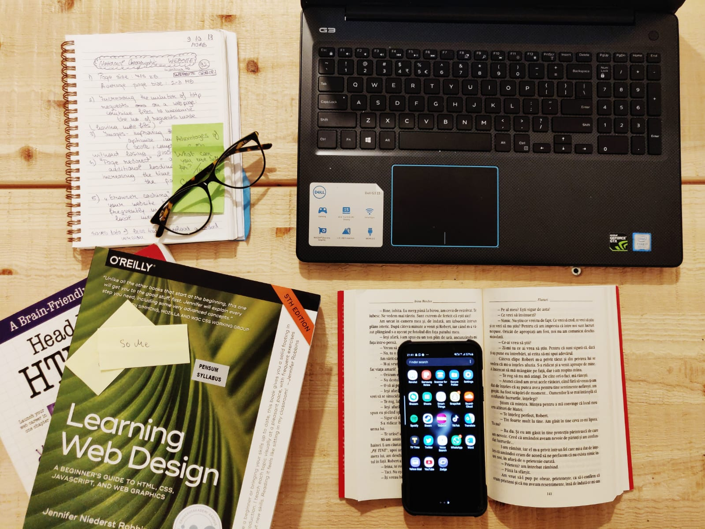
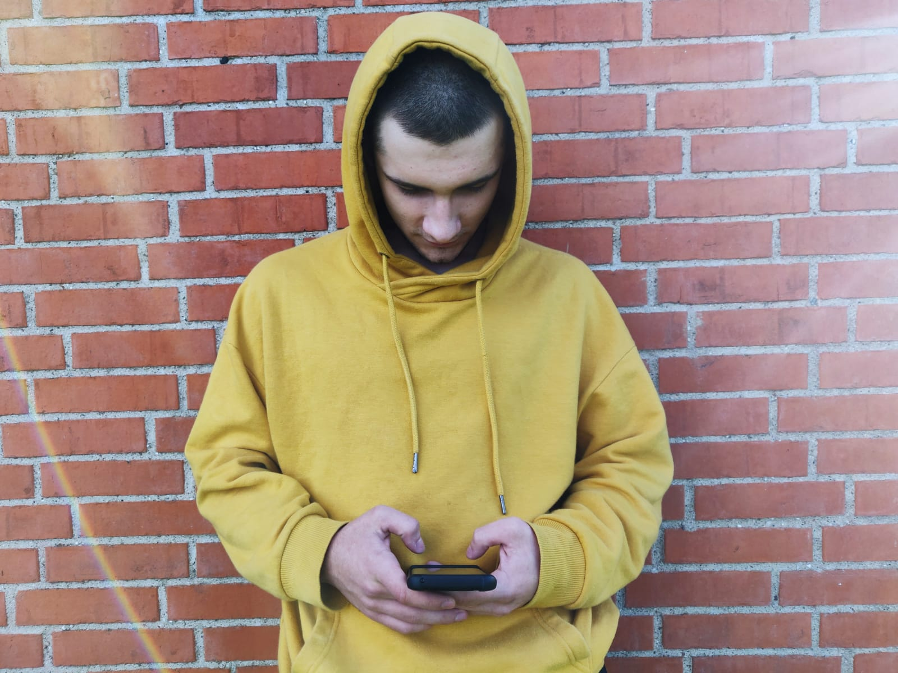

Is Social Media a good or a bad thing in our lives?
But would it change something if we would know the effects that social media has on us? In this article we will see what the benefits of social media are but also the bad effects of using it.
1.Advantages
Learning
Facebook groups are the most useful for that because they are well-structured and it is very easy to make announcements, chat, share the ideas etc. If you and your classmates have never tried that, maybe this is the right time to start!
Being in touch with people

Moreover, you also have to be able to communicate with your fellow students so you can ask any question anytime and also is a good way to make new friends by chatting or getting closer to the ones you already have.
Getting inspiration

There are a lot of people who are posting creative stuff, especially on Instagram and Pinterest and you can be inspired by them. So go and find people that make you feel something good and inspires you and follow them. Maybe someday their ideas will help you with yours, even it is about a new project at school or a new crazy make-up look.
Finding interesting events

This events are a great opportunity to meet new people and make new friends!
2. Disadvantages
It creates addiction

In a life surrounded by technology it is normally for the most of us to spend a lot of time on social media. But sometimes we cross the line and we forget there are other things we should do, for example hanging out with our friends or dedicate more time to our hobbies.
The abuse of social media also has bad effects on our body and our habits: we don’t get the amount of hours of sleep that we need so we won’t be able to work efficiently because our brain and our memory are collateral victims of our vices.
The abuse of social media also has bad effects on our body and our habits: we don’t get the amount of hours of sleep that we need so we won’t be able to work efficiently because our brain and our memory are collateral victims of our vices.
Gives people the opportunity to be hurtful

You have surely seen at least once a hurtful comment or an inappropriate post about a sensitive topic for somebody. Yes , I am talking about haters, those people who reacts negatively on someone’ s post. Of course everyone has the right ti have an opinion, but being mean is not a solution .
Haters lower the self-confidence of other’s work and make them feel that they are not good enough. So how do we stop them? We can’t . but what we can do is to realize that there are always going to be people who criticize us, but we have to go on and take the constructive feedback from other users.
Haters lower the self-confidence of other’s work and make them feel that they are not good enough. So how do we stop them? We can’t . but what we can do is to realize that there are always going to be people who criticize us, but we have to go on and take the constructive feedback from other users.
It creates a stereotype of “How should we be”

Don’t be afraid to be original! As I said, there will always be people who appreciate you and people who criticize you, but what matters the most is you to be satisfied with yourself and with the choices you made. So be who you want, do what you want (but of course, don’t break the law).